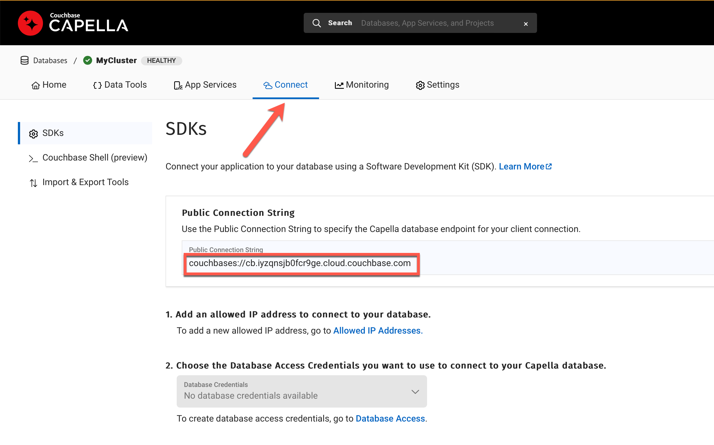
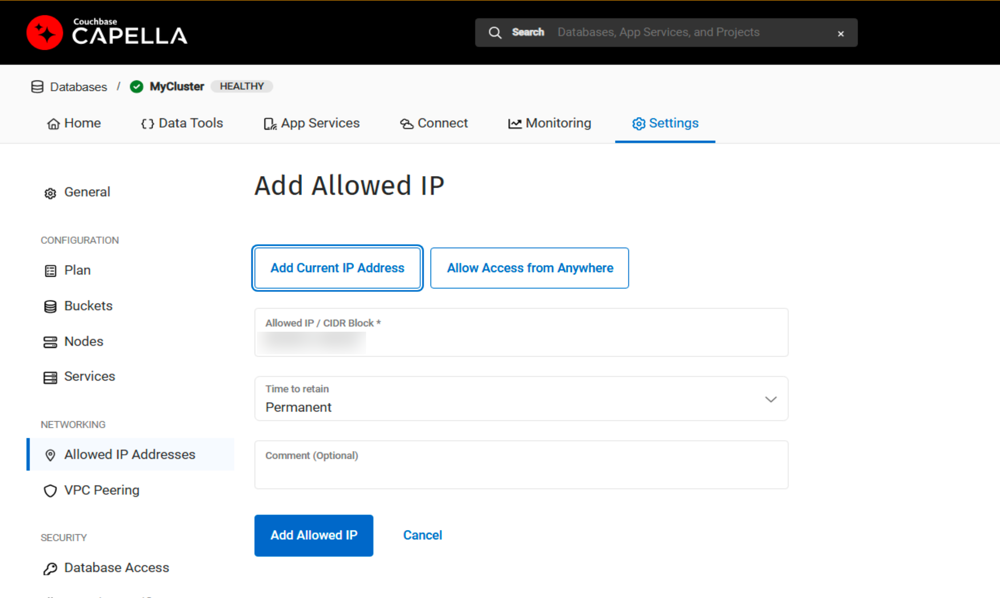
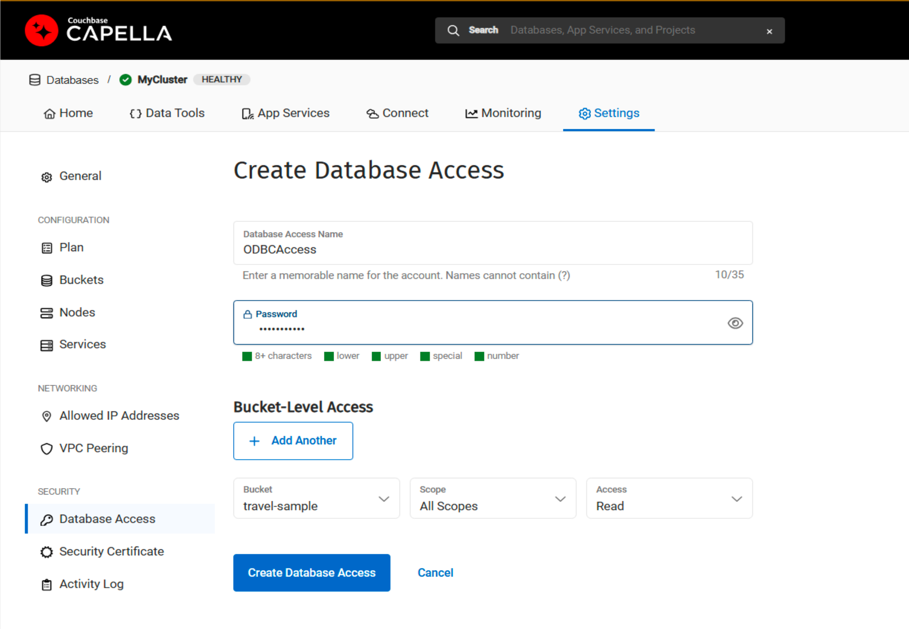
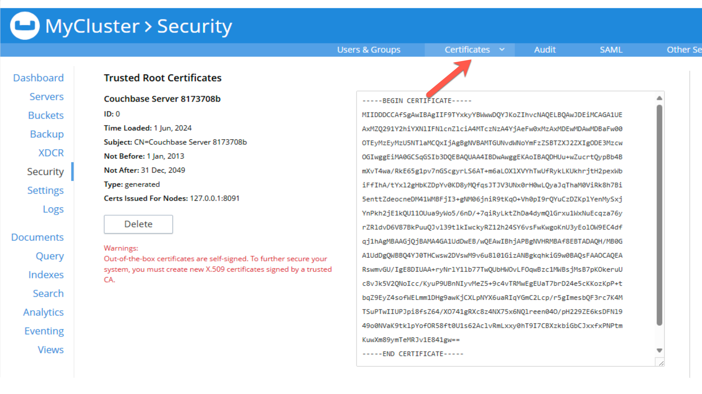

Couchbase Power BI Connector
The Couchbase Power BI Connector integrates the tabular views of the Couchbase Analytics Service, your Capella columnar instance, or Capella provisioned instance, with Microsoft’s Power BI interactive data visualization platform.
The Couchbase Power BI Connector provides integration between Microsoft’s Power BI interactive data visualization platform and either:
-
Couchbase Analytics Service (CBAS)
For self-managed CBAS, the Power BI connector requires Couchbase Server 7.2.4 or newer. -
Tabular views of your Capella columnar collections or query results.
Capella columnar is currently in private preview.
Install Power BI
Before you start, ensure you have a supported version of Microsoft Power BI Desktop installed. The Couchbase Power BI Connector requires Power BI Desktop version March 2017 or later.
If necessary, download Power BI Desktop from the Microsoft downloads page.
| Power BI is only available for the Microsoft Windows platform — for other platforms, consider our Tableau connector. |
Install the Couchbase ODBC Driver
-
Download the
couchbase-odbc-1.1-win64.msifile from https://packages.couchbase.com/releases/couchbase-odbc-driver/1.1/couchbase-odbc-1.1-win64.msi — see the release notes page for more details. -
Double-click the file to open the Couchbase ODBC Setup Wizard.
-
Install the ODBC drivers from the downloaded file. This installation provides both ANSI and Unicode drivers.
| Make sure that you have installed the 64-bit versions of the ODBC drivers. |
Install OpenSSL
The connection between a Couchbase Analytics instance or a Capella columnar database (currently in private preview) and Power BI requires a Couchbase ODBC driver. OpenSSL is a required dependency for the driver.
-
Download
Win64 OpenSSL v3.3.1 Lightfrom the Shining Light Productions site. -
Install OpenSSL from the downloaded file.
-
Verify that Windows has installed SSL, and registered the path of the binary. Open the command prompt (
cmd), and enter the following:openssl version
-
If the output indicates OpenSSL is not installed, rather than returning the version that you installed, then you need to add the OpenSSL binary’s path to the
env:-
Check the
C:\Program Filesor useFindto locate the SSL binary — usually the path will be something like:C:\Program Files\OpenSSL-Win64\bin
-
Add this path to the environmental variables list, found in .
-
Now verify that Windows has registered the path of the binary. Once again, open the command prompt (
cmd) — it must be a fresh command prompt, as the earlier one will not have loaded the newly added environmental variables — and enter the following:openssl version
-
Setting up a Secure Connection
If you are using Capella, then you will need to obtain a connection string for your database, and generate an API key to plug into the ODBC connector.
If you are using Couchbase Server as a standalone instance, then Couchbase strongly recommends that you secure your ODBC connection using SSL. This ensures encryption of the communication between Power BI and the Couchbase server.
-
Couchbase Capella
-
Couchbase Standalone
To obtain the connection string.
-
Sign in to your Capella instance as an Administrator.
-
Select the Connect item from the top-level menu.
-
Make a copy of the
public connection string. -
In the next section of the page, you will find the link to create a list of Allowed IP Addresses. Click on the link to create an entry for the IP address of the machine upon which you’re running Power BI.
You can use the Add Current IP Address button to fill in the address of the machine currently running the web console. -
Return to the Connect screen and click on the Database Access link. Create a new database access entry, setting values for
bucket, andscopes.
To create a secure connection to a Couchbase standalone instance, you need to obtain a root certificate from the Administrator’s Console.
-
Use your web browser to access the Admin console, and log in as an Administrator.
-
Use the left-hand menu to access the Security settings.
-
From the top menu, select Certificates. This will take you to the page from which you can view the server’s security certificates:
 -
Copy all the text in the Trusted Root Certificates section (start from
BEGIN CERTIFICATEand includeEND CERTIFICATE), and save the text to an accessiblePEMfile. (e.g.,C:\Users\user\certificate.pem).You will use this file later when you create the ODBC connection.
Configure the ODBC Data Source
You need to configure the data source parameters to connect your Power BI desktop to Couchbase.
To configure the Couchbase ODBC driver as a User DSN:
-
Open the ODBC Administration tool.
-
Create a new ODBC connection using one of the Couchbase drivers (either
ANSIorUnicode), then select Finish -
On the next window, select Couchbase Analytics.
-
Depending on whether you are connecting to Couchbase Capella, or a standalone Couchbase instance, fill in a set of parameters from the choices below:
-
Couchbase Capella
-
Couchbase Standalone
Name: Enter an identifying name for the data source.
Description: Enter an optional description.
Host: Fill in the connection string you copied here.
You will need to remove the
couchbase:prefix from the beginning of the connection string.Database: Enter the name of a Capella columnar database.
User: Enter the generated API key.
Password Enter the secret for the API key.
Name: Enter an identifying name for the data source.
Description: Enter an optional description.
Host: Enter the IP address of the Data (KV) node in the Couchbase cluster.
Port: 8091for non-SSL, or11207for an SSL connection.Scope: Name of the scope from which the data is being extracted. If a two-part scope — such as
travel-sample.inventory— then the two parts must be separated by a/—travel-sample/inventory.Ensure that you do not include extraneous spaces or tabs when you enter the scope name. SSLMode: Leave blank for a non-SSL connection, or fill in
requirefor SSL.User: You can use the Administrator user set up during installation for testing purposes, but a user restricted to only CBAS permissions — Cluster Admin Role — should be used for deployment.
Password: Enter the cluster password.
CertificateFile Path: Leave blank for a non-SSL connection, or fill in
requirefor SSL.For information about adding an ODBC data source, see the Microsoft support documentation.
-
Install the Couchbase Power BI Connector
You will need to install the connector that allows Power BI to communicate with Couchbase, using ODBC.
-
Download
couchbase-powerbi-connector-1.0.mezfrom https://packages.couchbase.com/releases/couchbase-powerbi-connector/1.0/couchbase-powerbi-connector-1.0.mez — see the release notes page for more details. -
Follow Microsoft’s guide on configuring a custom connector.
Verify the Connector is Loaded Successfully:
-
Open Power BI.
-
Go to Get Data → More → Couchbase Connector
The Couchbase Power BI Connector is now correctly configured to work with the Power BI platform.
Next, you configure a connection to Couchbase Analytics or an instance of the Capella columnar database.
Configure an ODBC Data Source
You configure a data source name (DSN) for each CBAS scope or Capella columnar database you want to use in Power BI.
Configure a User DSN in Power BI
You can install either Couchbase ODBC Driver (ANSI) or Couchbase Unicode Driver (UNICODE). If the data contains multibyte characters, select Unicode.
| Be careful to use the ODBC Data Source Administrator (64 bit) — there is an ODBC Data Source Administrator (32 bit) available, but this will not work with the connector. |
When the Create data source for Couchbase dialog opens, select Capella Columnar or (for CBAS) Couchbase Analytics and enter values as follows:
Use the Couchbase Power BI Connector
Business information tools rely on data that is organized into relational databases. To use the Power BI connector, you must create tabular analytics views of your JSON documents. For self-managed CBAS, see the workbench docs or tabular views.
After you prepare tabular views and define DSNs in Power BI, you use the Couchbase Power BI Connector to load data into Power BI.
Use the Connector to Add Data to Power BI
To add data from Capella columnar or CBAS to Power BI, follow the instructions to Connect to data sources in Power BI desktop in the Microsoft documentation.
Couchbase Connector appears on the Get Data list of data sources. When prompted for Username and Password, supply your Capella columnar or CBAS credentials.
After you connect, a list of the tabular views in the database specified by the DSN appears. Load a view to use Power BI options.
An example image of the travel-sample airport_view follows.